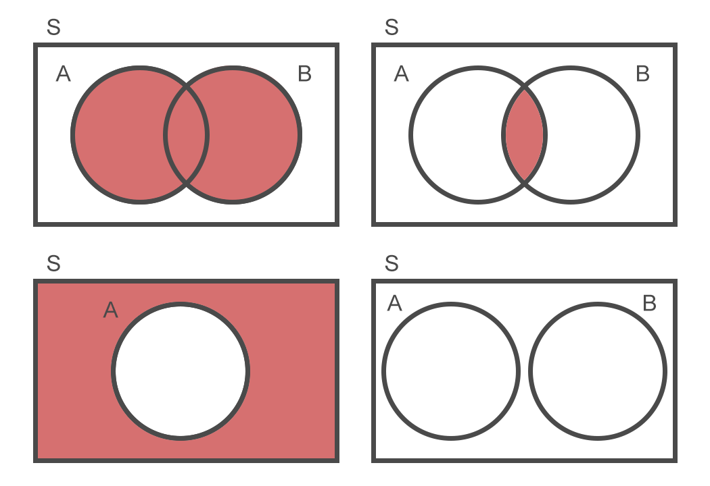

1. Probabilidad
Introducción
Supongamos que abre una heladería nueva en la ciudad. Esta heladería sólo tiene ocho sabores distintos, pero se rumorea que son muy buenos. Un amigo nuestro quiere probar sus helados, por lo que propone ir a comprar un pote de un kilogramo, en el que entran cuatro sabores distintos. Nosotros accedemos con gusto. Nuestro amigo sale rumbo a la heladería y nosotros nos quedamos en el departamento esperando su regreso. De repente caemos en la cuenta de que nunca decidimos qué sabores pedir. Sabemos que uno de los ocho sabores de la heladería es limón, el cual nuestro amigo adora pero nosotros detestamos. Lo detestamos a tal punto que, si uno de los cuatro sabores del pote fuese limón, no comeríamos ninguno de ellos. Entonces nos hacemos una pregunta.
¿Cuál es la probabilidad de que nuestro amigo traiga helado de limón?
Definiciones importantes
Antes de calcular una probabilidad debemos generar el ambiente propicio: definir matemáticamente los elementos básicos que componen la situación sobre la cual queremos obtener probabilidades. Esto se hace para evitar ambigüedades y ordenar nuestro pensamiento.
Experimento aleatorio
El experimento aleatorio es aquella situación en la que no es posible saber de antemano el resultado a obtener, incluso repitiéndola varias veces bajo las mismas condiciones.
En el ejemplo propuesto, el experimento aleatorio es “elegir 4 sabores de helado entre 8 posibles”.
Es costumbre definir el experimento aleatorio partiendo de un verbo en infinitivo: en este caso, “elegir”. Nótese que esto no refleja quién es la persona que lleva a cabo la acción. La idea es despojarse de toda información innecesaria y centrarse en la acción cuyo resultado genera incertidumbre.
Los experimentos aleatorios gozan de una propiedad llamada regularidad estadística, la cual refiere a una estabilidad a largo plazo en la frecuencia de aparición de los resultados obtenidos. Por ejemplo: si arrojo muchas veces una moneda (llamémosle “cara” y “cruz” a sus dos lados), es de esperar que a largo plazo el porcentaje de caras obtenidas sea aproximadamente 50%.
Espacio muestral
El espacio muestral es el conjunto de todos los resultados posibles e imaginables del experimento aleatorio. Se lo suele simbolizar con la letra \(S\).
En el ejemplo, supongamos que los ocho sabores de la heladería son:
Sabores = { Chocolate, Vainilla, Frutilla, Limón, Menta, Dulce de Leche, Americana, Sambayón }
Por lo tanto, un posible resultado del experimento sería \(s\) = {Menta, Vainilla, Americana, Limón}.
¿Cuántos resultados distintos existen? Para responder a esta pregunta podemos hacer uso de las herramientas de conteo estudiadas en la unidad anterior. Como no nos importa el orden y no se admite una repetición de los sabores, usamos una combinación simple: \(_8C_4 = 70\) posibles elecciones de 4 sabores. Este es el tamaño del conjunto \(S\). En notación matemática se dice que \(\#S = 70\).
\[S = \{ s_1, s_2, s_3, \cdots, s_{69}, s_{70} \}\]
Si quisiéramos definir al conjunto \(S\) en forma exhaustiva 1, se vería algo así como: \
\(S\) = {
{Chocolate, Vainilla, Frutilla, Limón},
{Chocolate, Vainilla, Frutilla, Menta},
{Chocolate, Vainilla, Frutilla, Dulce de Leche},
\(\cdots\)
{Menta, Dulce de Leche, Americana, Sambayón}
}
Suceso aleatorio
Se denomina suceso o evento aleatorio a cualquier subconjunto del espacio muestral.
Volviendo al ejemplo, un evento podría ser “elegir chocolate”. Este evento equivale a un subconjunto de \(S\) que contiene todas aquellas elecciones donde uno de los 4 sabores es Chocolate, sin importar cuáles son los 3 sabores restantes. ¿Qué tamaño tiene este subconjunto? En total contiene \(_7C_3 = 35\) elementos.
Suele usarse una letra mayúscula para definir un suceso. En este caso:
\(A\): elegir Chocolate
Otros ejemplos de eventos sobre este mismo experimento podrían ser:
- \(B\): no elegir Frutilla
- \(C\): elegir Limón y Chocolate
- \(D\): elegir un sabor frutal
- \(E\): no elegir ningún sabor
Operaciones entre sucesos
Los eventos aleatorios son conjuntos matemáticos y, por lo tanto, admiten las mismas operaciones que suelen utilizarse para manipular conjuntos.
Sean \(A\) y \(B\) eventos definidos sobre un espacio muestral \(S\).
- Suceso unión (\(A \cup B\)): elementos de \(S\) que pertenecen a \(A\), a \(B\) o a ambos.
- Suceso intersección (\(A \cap B\)): elementos de \(S\) que pertenecen a \(A\) y a \(B\) simultáneamente.
- Suceso complemento (\(\overline{A}\) ó \(A^c\)): elementos de \(S\) que no pertenecen a \(A\).
Sobre estas definiciones se desprende que \(A\) y \(B\) son sucesos mutuamente excluyentes si y sólo si \(A \cap B = \emptyset\) (conjunto vacío).

Pensar en operaciones entre sucesos puede ser útil porque a veces un suceso complejo puede descomponerse en múltiples sucesos simples, los cuales se conectan mediante estas operaciones. Por ejemplo, supóngase el evento:
\(A\): “elegir Chocolate y Menta, o bien Frutilla y Sambayón”“.
Este evento puede descomponerse como \[A = (C \cap M) \cup (F \cap S),\] donde
- \(C\): elegir Chocolate.
- \(M\): elegir Menta.
- \(F\): elegir Frutilla.
- \(S\): elegir Sambayón.
Leyes de De Morgan
Al combinar complementos con intersecciones o uniones es importante tener en cuenta las siguientes reglas, atribuidas a Augustus De Morgan:
- El complemento de una unión es igual a la intersección de los complementos. \[\overline{A \cup B} = \overline{A} \cap \overline{B}\]
- El complemento de una intersección es igual a la unión de los complementos. \[\overline{A \cap B} = \overline{A} \cup \overline{B}\]
Estas reglas aplican no sólo entre dos eventos, sino para un número arbitrario de ellos.
Definiciones de probabilidad
Definición clásica (a priori)
Esta definición establece que la probabilidad de que, al realizar un experimento, se obtenga un cierto resultado, es igual al cociente entre el número de casos favorables al resultado y el número total de casos posibles.
\[\frac{\#\text{casos favorables}}{\#\text{casos posibles}}\]
¿A qué nos referimos con casos favorables y casos posibles? Supongamos un evento aleatorio sobre el que se define un espacio muestral \(S\), y sea \(A\) un evento de interés para el cual queremos calcular su probabilidad de ocurrencia. Usaremos las siguientes definiciones:
- Casos favorables: todos los elementos pertenecientes al conjunto \(A\).
- Casos posibles: todos los elementos pertenecientes al conjunto \(S\).
Siendo \(A\) un subconjunto de \(S\), resulta evidente que todo caso favorable es, a su vez, posible.
Bajo esta definición, entonces, podemos calcular la probabilidad de \(A\), simbolizada \(P(A)\), como: \[P(A) = \dfrac{\#A}{\#S},\] o sea, el tamaño del conjunto \(A\) dividido por el tamaño del espacio muestral.
Esta definición es la razón por la que estudiamos herramientas de conteo: calcular una probabilidad implica conocer el tamaño de los conjuntos \(A\) y \(S\), lo cual a su vez requiere una metodología para contar sus respectivos elementos.
Habiendo definido todos estos conceptos, finalmente nos encontramos en condiciones de resolver el ejemplo introductorio.
Ejemplo 1
Una heladería ofrece 8 sabores distintos. Si enviamos a un amigo a comprar un pote de 1kg (el cual contiene 4 sabores distintos), ¿cuál es la probabilidad de que uno de los sabores elegidos sea limón?
Solución: Definimos, en primer lugar, todas las nociones que componen el marco del ejercicio.
- Experimento aleatorio: elegir 4 sabores de helado entre 8 posibles.
- Espacio muestral: \(S\) = {todos los subconjuntos posibles de 4 sabores distintos}.
- Ejemplo de resultado: \(s\) = {Sambayón, Chocolate, Limón, Menta}.
- Casos posibles: \(\#S = _8C_4 = 70\).
- Evento de interés: \(A\): elegir Limón.
- Casos favorables: \(\#A = _7C_3 = 35\).
Por lo tanto, el resultado final es \[P(A) = \dfrac{\#A}{\#S} = \dfrac{35}{70} = \dfrac{1}{2} = 0,5 = 50\%\]
Las probabilidades no son siempre intuitivas. ¿Hubieran esperado que el resultado fuese un número tan alto?
La definición clásica de probabilidad, lamentablemente, sólo aplica a experimentos con un número finito de resultados posibles y donde todos ellos son equiprobables.2 Cuando un experimento no cumple con estas condiciones es necesario recurrir a otra definición de probabilidad.
Definición frecuencial (a posteriori)
La regularidad estadística de la que gozan los experimentos aleatorios permite definir a la probabilidad de un suceso como el límite, cuando el número de repeticiones del experimento tiende a infinito, de la frecuencia relativa del suceso.
Supongamos que repetimos el mismo experimento un total de \(n\) veces. Sea \(I_n(A)\) una variable que cuenta el número de veces que el resultado del experimento cumplió con lo establecido en el evento \(A\). La definición frecuencial establece que, aumentando arbitrariamente el número de repeticiones, la probabilidad resulta igual a:
\[P(A) = \lim_{n \to \infty} \frac{I_n(A)}{n}\]
Esta definición es puramente teórica, en el sentido de que en la práctica nunca pueden hacerse infinitas repeticiones de un experimento: deberá bastarnos con hacer un número suficientemente grande de repeticiones y tomar el resultado final como una aproximación del verdadero resultado.
Afortunadamente, no siempre es necesario hacer una verdadera repetición del experimento. Para ciertos experimentos existen teoremas y propiedades matemáticas que permiten deducir la frecuencia relativa exacta de un suceso, sin necesidad de llevar a cabo siquiera una ejecución real del experimento. En otras ocasiones, el experimento puede ser realizado mediante simulaciones computacionales, lo cual permite repetirlos muchas veces en poco tiempo.
Algunos ejemplos
Ejemplo 2
Se arroja un dado y se observa la cara superior. ¿Cuál es la probabilidad de obtener un número mayor a 4? ¿Cuál es la probabilidad de obtener un número mayor a 6?
Solución:
- Experimento aleatorio: arrojar un dado y observar la cara superior.
- Espacio muestral: \(S\) = {1, 2, 3, 4, 5, 6}.
- Ejemplo de resultado: \(s\) = 3.
- Casos posibles: \(\#S = 6\).
- Evento de interés:
- \(A\): obtener un número mayor a 4.
- \(B\): obtener un número mayor a 6.
- Casos favorables:
- \(A = \{5, 6\} \implies \#A = 2\).
- \(B = \emptyset \implies \#B = 0\).
Por lo tanto, los resultados son \[P(A) = \dfrac{\#A}{\#S} = \dfrac{2}{6} = \dfrac{1}{3} = 0,\overline{3} = 33,\overline{3}\%\] \[P(B) = \dfrac{\#B}{\#S} = \dfrac{0}{6} = 0 = 0\%\]
Ejemplo 3
Los organizadores de un seminario de tres días de duración están considerando qué almuerzo servir en cada uno de los días: pescado o carne. ¿Cuál es la probabilidad de que no sirvan el mismo almuerzo dos días consecutivos?
Solución:
- Experimento aleatorio: elegir tres menúes de almuerzos, siendo pescado y carne las opciones para cada día.
- Espacio muestral: \(S\) = {todas las ternas posibles a partir de los elementos “Pescado” y “Carne”}.
- Ejemplo de resultado: \(s\) = (Carne, Carne, Pescado).
- Casos posibles: \(\#S = _2P'_3 = 2^3 = 8\).
- Evento de interés: \(A\): no servir el mismo almuerzo dos días consecutivos.
- Casos favorables: \(A\) = {(Carne, Pescado, Carne), (Pescado, Carne, Pescado)} \(\implies \#A = 2\).
Por lo tanto, el resultado final es \[P(A) = \dfrac{\#A}{\#S} = \dfrac{2}{8} = \dfrac{1}{4} = 0,25 = 25\%\]
Axiomas de probabilidad
Sea un experimento aleatorio sobre el que se define un espacio muestral \(S\). La probabilidad de un evento \(A\) cumple con los siguientes axiomas:
- \(P(A) \geq 0\) para todo suceso \(A\).
- \(P(S) = 1\).
- \(A\) y \(B\) son m.e. \(\implies P(A \cup B) = P(A) + P(B)\).
A partir de los axiomas de probabilidad se desprenden las siguientes propiedades:
- \(P(\overline{A}) = 1 - P(A)\) para todo suceso \(A\).
- \(P(\emptyset) = 0\).
- \(P(A) \leq 1\).
- \(B \subseteq A \implies P(B) \leq P(A)\).
- \(P(A \cup B) = P(A) + P(B) - P(A \cap B)\).
Probabilidad condicional
(Próximamente.) 🚧
En matemáticas, existen dos formas de definir un conjunto: por extensión y por comprensión. La primera implica listar uno por uno los elementos del conjunto; por ejemplo: {2, 4, 6, 8}. La segunda implica usar palabras para definir el contenido; por ejemplo: {los números pares entre 1 y 9}.↩︎
Experimentos de este estilo se denominan “laplacianos”, en honor a Pierre-Simon Laplace.↩︎